Fashion Designers of the Philippines that Promotes and Applies Traditional Clothings in Their Designs
Francis Libiran
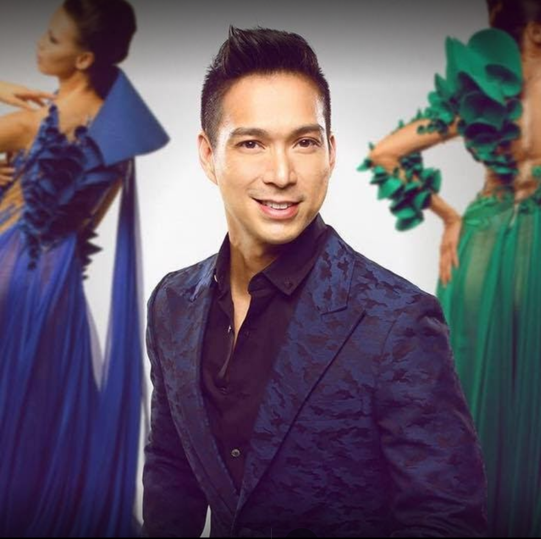
A well-known fashion designer and architect. His love of patterns, architecture, nature, and travel is evident in his works. Art deco patterns and cut-outs, tailored laser-cut materials, intricate adornments, and custom embroidery are among his signature design approaches. He has been in the fashion industry for 2 decades and is regarded as one of the high-end fashion designers in the Philippines who specializes in customized and ready-to-wear wedding gowns, evening gowns, dresses, as well as menswear, corporate wear, and accessories. One of his famous works are the gowns of Nikki Reed - an American actress who was known for her portrayal of vampire Rosalie Hale in The Twilight Saga. And his well-known Barong Tagalog uniforms that are made for the Filipino athletes for the 2019 Southeast Asian Games that was hosted by the Philippines and the 2022 South East Asian Games by Vietnam. He is known for not solely thinking of income as he is a person who values his principles and roots.
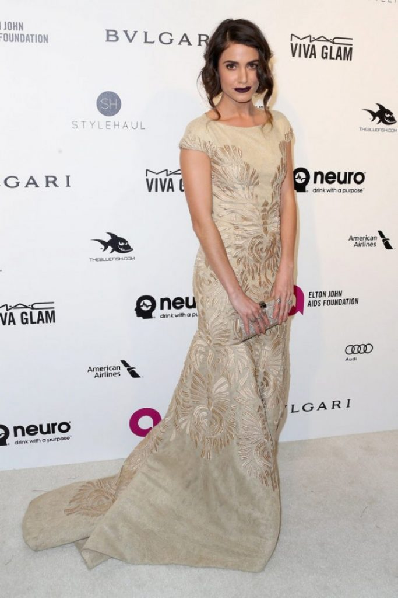
Nikki Reed wearing the gown made by Francis Libiran
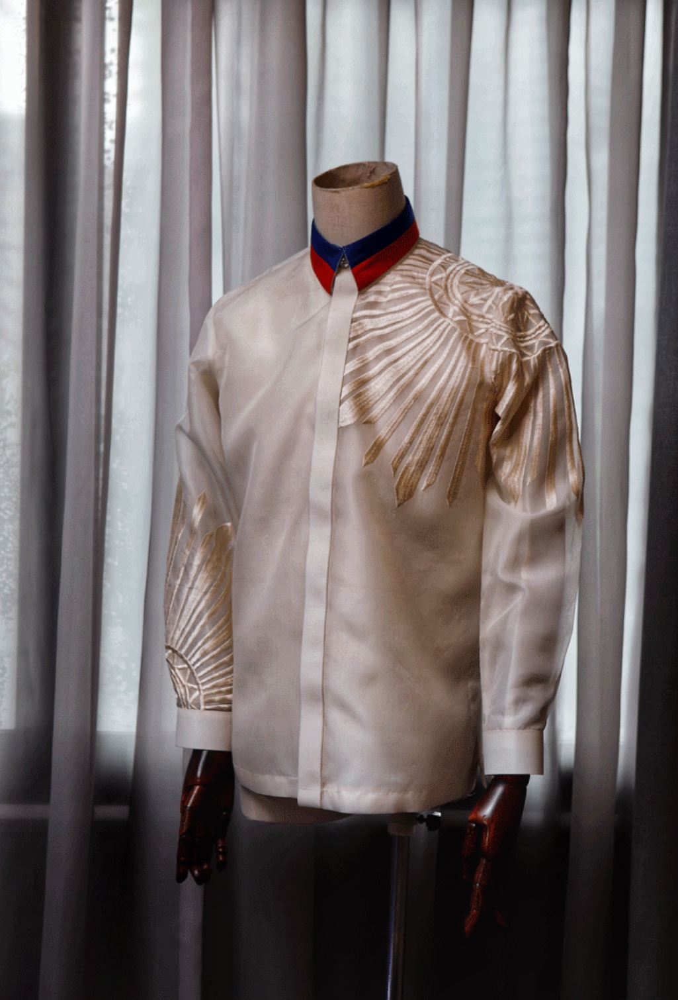
The 2019 SEA Games Barong Tagalog uniform with the sun rays of the Philippine flag.
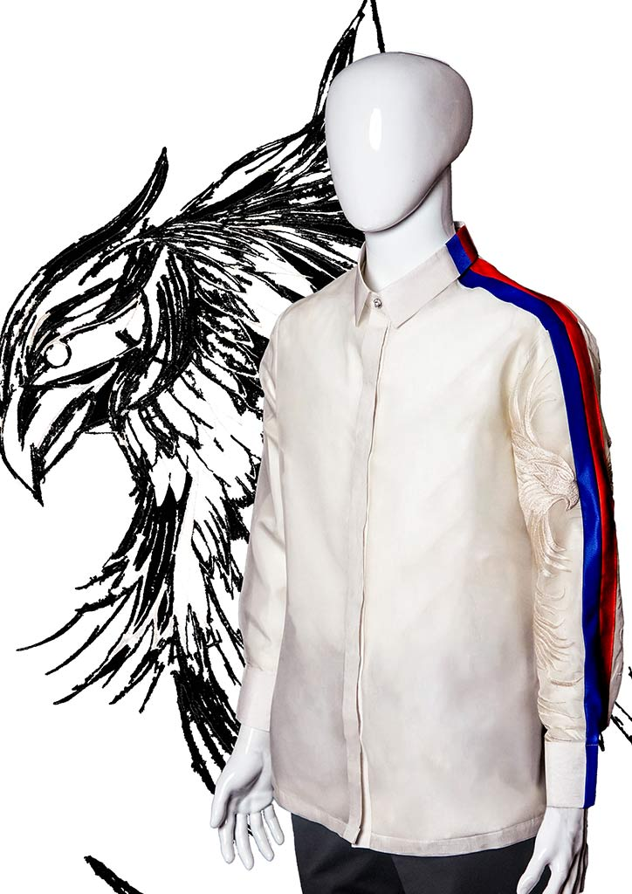
The 2022 SEA Games Barong Tagalog uniform with an eagle embroidery.
You can checkout other products and collections of Francis libiran at
francislibiran.com
Edgar San Diego

When he was young, he joined The Fashion Designers' Association of the Philippines (FDAP) to develop the country's fashion industry which made him the prestigious design assembly's youngest pioneer. He eventually became an FDAP officer, who served as project chairman in most of the group's multiple major projects after working tirelessly to improve his craft. He ultimately rose through the ranks into becoming the FDAP president, a post he kept for eight years. He is also an accomplished painter in which he held his first solo exhibition named “Baro't Saya Tuwa at Ligaya” - a homage to his Filipino culture.
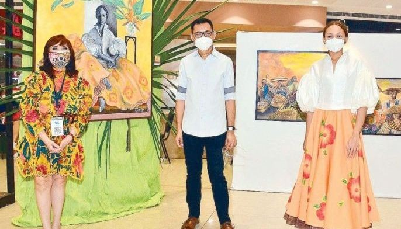
Edgar San Diego helding his exhibition of “Baro't Saya Tuwa at Ligaya”
You can checkout Edgar San Diego at
www.facebook.com/edgarsandiegofashionandarts
Mimi Parrel-Pimentel
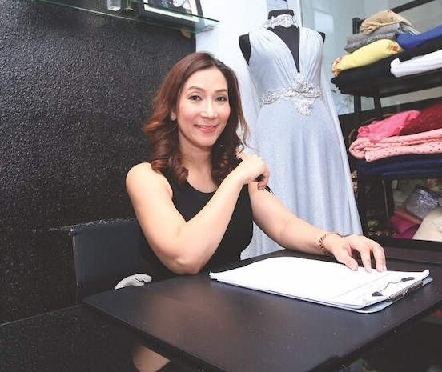
Is an awardee of the Ramon Magsaysay Foundation in 2000; she was considered as the Best Female Entrepreneur in Region X. In 2016, she was appointed to become the fashion consultant of former President Rodrigo Roa Duterte. In 2017, the designer was given the opportunity to create the barongs of the ASEAN ministers, and even the outfits of their spouses. She also curated the outfits of the cabinet members and other executives. In the same year, Mimi Parrel-Pimentel also created the Filipiniana gowns of the candidates of Miss Universe. She was also given the chance to join the Singapore Fashion Week, and the House of Ikons fashion show in London.
Mimi Parrel-Pimentel with President Rodrigo Duterte
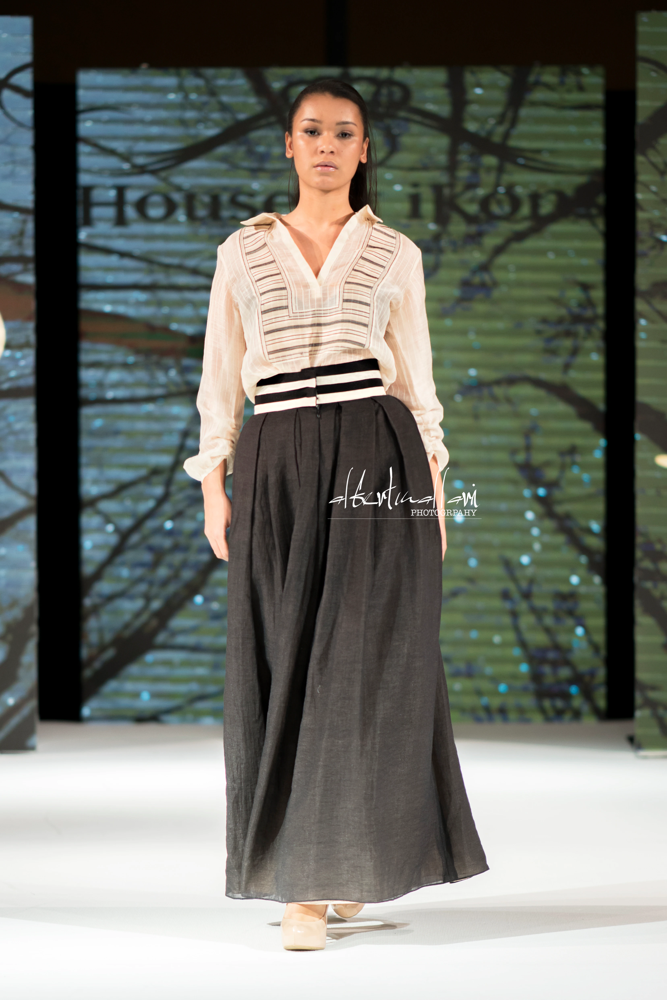 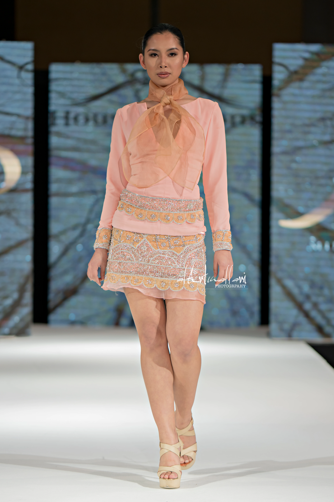
Mimi Parrel-Pimentel 20-Piece barong with T'nalak embroidery and Mindanao silk
You can checkout Mimi Parrel-Pimentel at
www.instagram.com/mimiparrelpimentel
Veronica Mae “V” Baguio
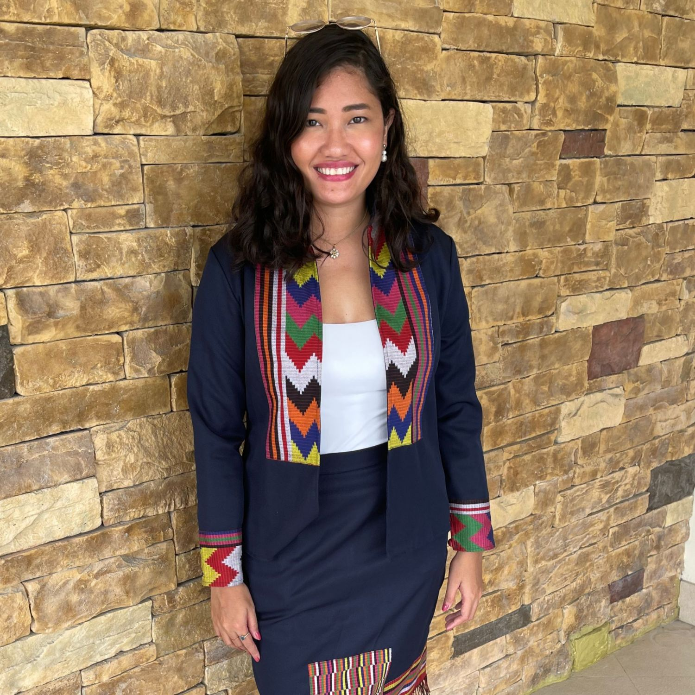
She is a fashion designer of Balik-Batik social enterprises and clothing brand that fuses intricate traditional Filipino artistry with modern wearable designs. They use the handwoven fabrics sourced from local, often indigenous, artisan weavers. Some of the created clothing are embroidered by the T'boli of South Cotabato or Panay-Bukidnon women of Iloilo. She aims to promote traditional weaving, make it more well-known among the younger generation, and make them wearable in any occasions. Balik Batik sources weaves all over the country, specifically binakul from Abra and langkit from Maranao. The actual clothes are then made in Cebu.
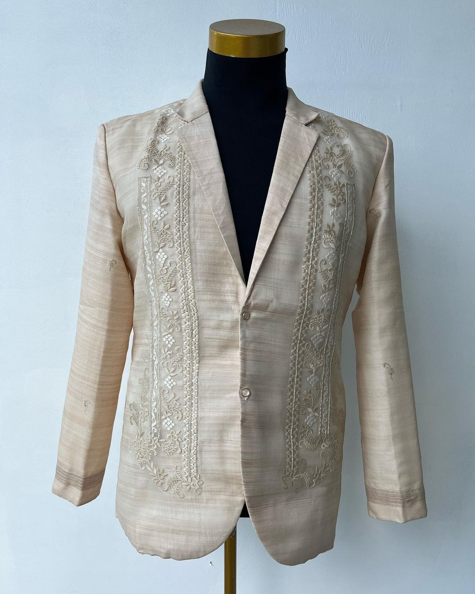
Custom made Balik Batik Coat Barong
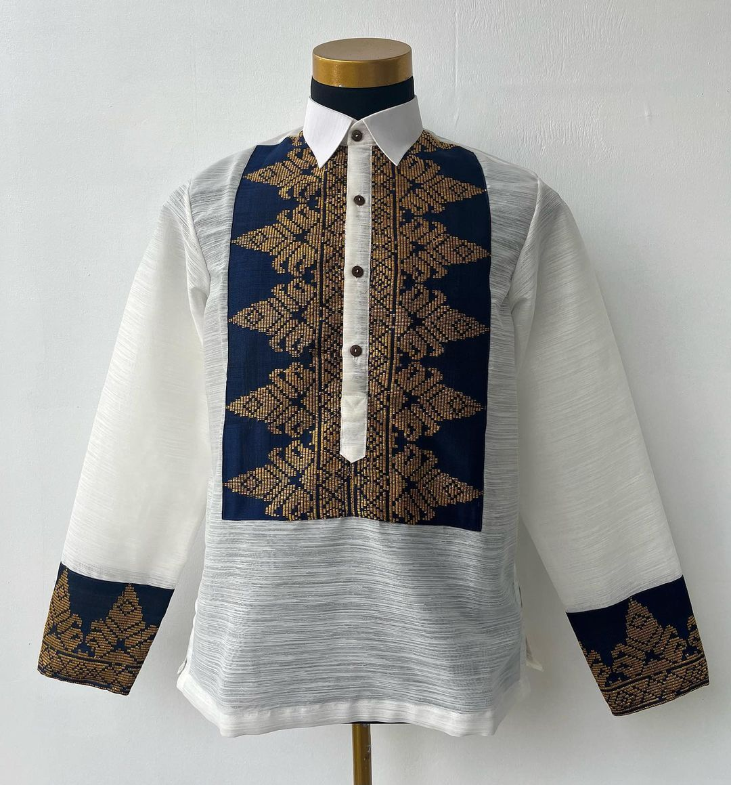
Custom made Barong featuring Inaul - the traditional handwoven cloth of Maguindanaon.
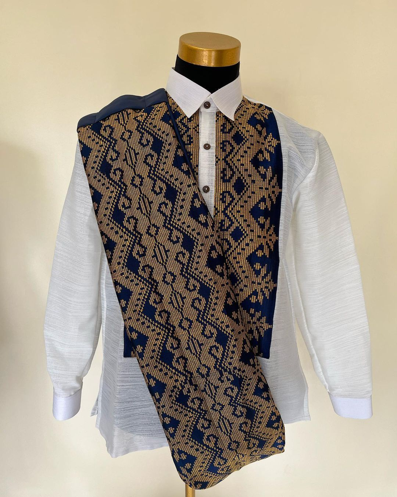
Bespoke Balik Batik Barong and matching sablay featuring Inaul, handwoven in Cotabato.
You can checkout Balik-Batik products at
www.facebook.com/balikbatik
Caroline Mangosing
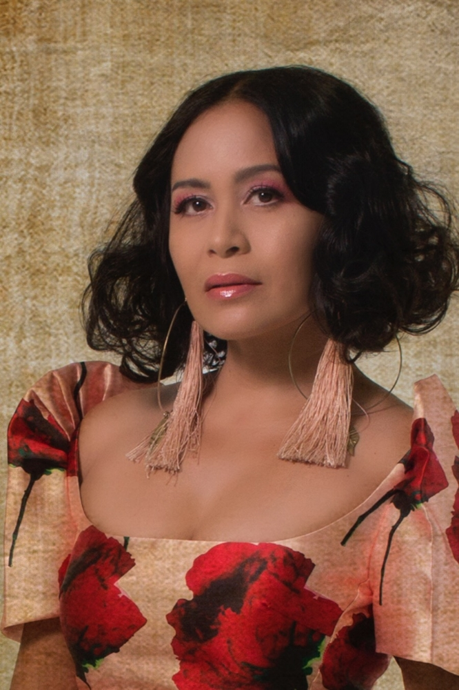
Founder of Vintage Gallery. VINTA Gallery is bespoke and ready-to-wear modern Filipiniana and Filipino-inspired fashion and accessories. Their popular designs were pan-Cordilleran or Ifugao pieces. Some of their works are Ifugao Bahag Dress, which is made from handloomed traditional Ifugao stripe textile that is inspired by the bahag of the Cordillera region. Her vision is to remove the idea of wearing cultural clothings as "costumes" and create acreate a fashionable Filipiniana clothing line that anybody can wear in any event or occasions. The Ifugao weaves are made by Ifugao people in which the Vinta Gallery buy their weaves directly through the region in order to support them.

Red Handloomed Ifugao Bahag Dress
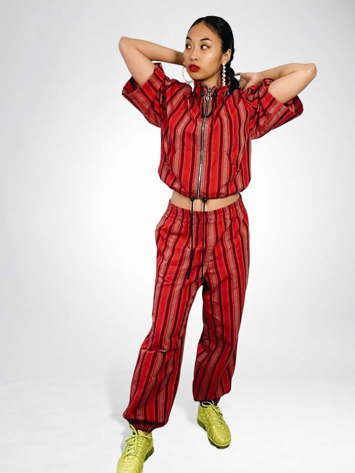
Handloomed Ifugao Track Suit
You can checkout Vintage Gallery products and collections at
vintagallery.com
Percy J. "PJ" Arañador
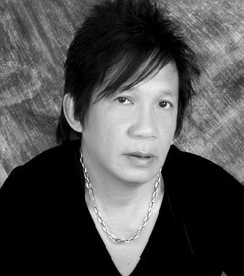
He is an First International Lifestyle Designer also known as “PJ” has established himself as an exceptionally talented designer. Percy Arañador is also a design-led product and merchandise development expert, trends tracker-blogger, and branding consultant focusing on image building. He draws inspiration from the East and the West; the traditional and the ultra-modern. He showcased one of his accessory designs highlighting the local fabric which is the Patadyong. The Patadyong is hand-woven by the women of Salngan Livelihood Multi-Purpose Cooperative which is a cooperative known for producing Hablon - a handloom weaved cloth.
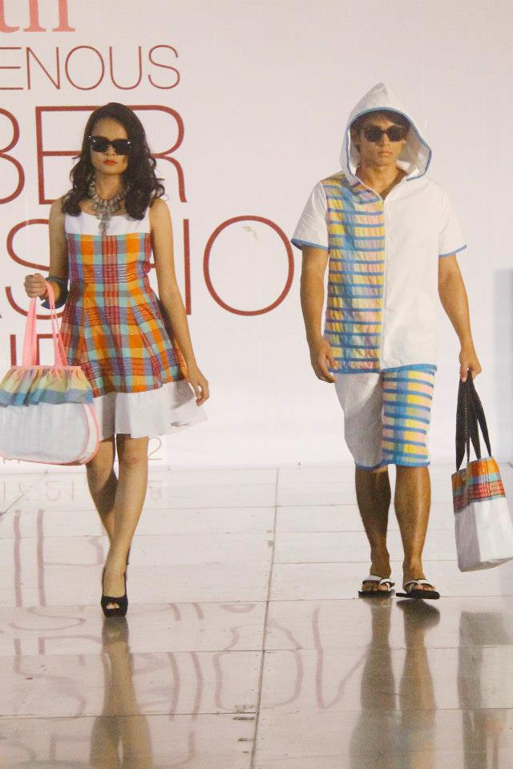 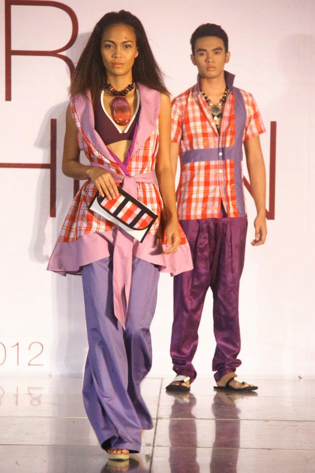
Patadyong Inspired Clothings from Herencia Modern Patadyong Fashion Show (2012).
You can checkout Percy J Arañador products and collections at
www.instagram.com/pj_aranador
Lydia Querian
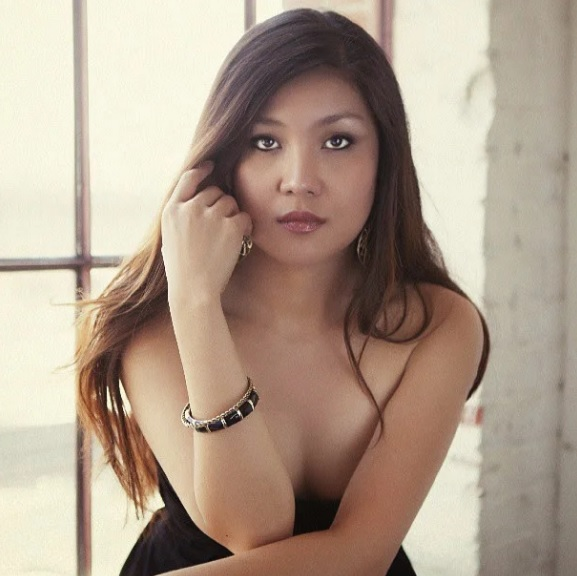
Founder and Chief Creative Officer of Daily Malong that aims to build awareness of “uncommon" Filipino textiles in a more prominent platform like New York Fashion Week. The Daily Malong is a ecommerce store promoting the application of indigenous handwoven textiles on modern wearables offering handwoven products. The products are sourced from different indigenous communities in the Philippines through different apparels, accessories and home goods. They strive to empower Indigenous Filipino artisans to continue their living traditions by extending appreciation in the diaspora. She stated that the indigenous textile worn will help the wearers and weavers to navigate societal atrocities, prevent climate change, and restore a more sustainable environment.
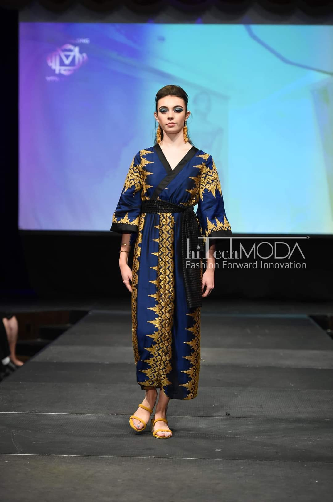 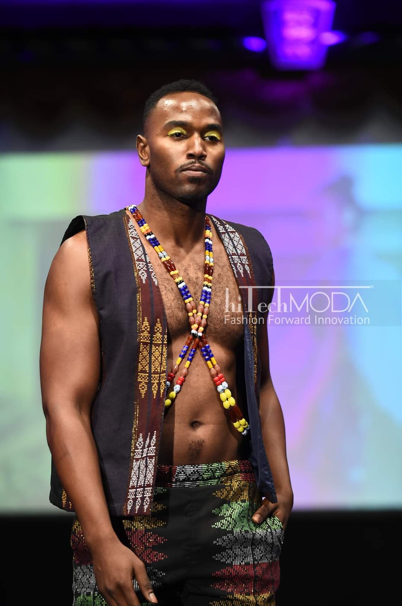
Malong Inspired Clothings in Daily Malong's Runway at Edison Hotel (2021).
You can checkout Daily Malong's weavers and shop at
www.dailymalong.com
Check Other Ingenious Fashion Designers:
https://www.tatlerasia.com/style/fashion/modernizing-the-barong-tagalog
https://www.lofficielph.com/fashion/these-filipino-designers-terno-balintawak-creations-championed-the-third-ternocon